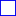

<!doctype html>
<html lang="en">
    <head>
        <meta charset="utf-8">
        <meta http-equiv="X-UA-Compatible" content="IE=edge">
        <meta name="viewport" content="initial-scale=1,user-scalable=no,maximum-scale=1,width=device-width">
        <meta name="mobile-web-app-capable" content="yes">
        <meta name="apple-mobile-web-app-capable" content="yes">
        <link rel="stylesheet" href="css/leaflet.css">
        <link rel="stylesheet" href="css/qgis2web.css">
        <link rel="stylesheet" href="css/leaflet-search.css">
        <link rel="stylesheet" href="css/leaflet-measure.css">
        <style>
        html, body, #map {
            width: 100%;
            height: 100%;
            padding: 0;
            margin: 0;
        }
        </style>
        <title></title>
    </head>
    <body>
        <div id="map">
        </div>
        <script src="js/qgis2web_expressions.js"></script>
        <script src="js/leaflet.js"></script>
        <script src="js/leaflet.rotatedMarker.js"></script>
        <script src="js/leaflet.pattern.js"></script>
        <script src="js/leaflet-hash.js"></script>
        <script src="js/Autolinker.min.js"></script>
        <script src="js/rbush.min.js"></script>
        <script src="js/labelgun.min.js"></script>
        <script src="js/labels.js"></script>
        <script src="js/leaflet-measure.js"></script>
        <script src="js/leaflet-search.js"></script>
        <script src="data/CATASTRO_ACTUAL_1.js"></script>
        <script src="data/PARCELAS_DESLINDE_2.js"></script>
        <script>
        var highlightLayer;
        function highlightFeature(e) {
            highlightLayer = e.target;

            if (e.target.feature.geometry.type === 'LineString') {
              highlightLayer.setStyle({
                color: '#ffff00',
              });
            } else {
              highlightLayer.setStyle({
                fillColor: '#ffff00',
                fillOpacity: 1
              });
            }
            highlightLayer.openPopup();
        }
        var map = L.map('map', {
            zoomControl:true, maxZoom:28, minZoom:1
        }).fitBounds([[40.1272562627,-2.818009526],[40.1289251961,-2.81476432003]]);
        var hash = new L.Hash(map);
        map.attributionControl.addAttribution('<a href="https://github.com/tomchadwin/qgis2web" target="_blank">qgis2web</a>');
        var measureControl = new L.Control.Measure({
            primaryLengthUnit: 'meters',
            secondaryLengthUnit: 'kilometers',
            primaryAreaUnit: 'sqmeters',
            secondaryAreaUnit: 'hectares'
        });
        measureControl.addTo(map);
        var bounds_group = new L.featureGroup([]);
        function setBounds() {
        }
        var img_ORTOFOTO_PNOA_0 = 'data/ORTOFOTO_PNOA_0.png';
        var img_bounds_ORTOFOTO_PNOA_0 = [[40.1259844208,-2.82107656127],[40.1319002253,-2.81176476273]];
        var overlay_ORTOFOTO_PNOA_0 = new L.imageOverlay(img_ORTOFOTO_PNOA_0, img_bounds_ORTOFOTO_PNOA_0);
        bounds_group.addLayer(overlay_ORTOFOTO_PNOA_0);
        map.addLayer(overlay_ORTOFOTO_PNOA_0);
        function pop_CATASTRO_ACTUAL_1(feature, layer) {
            layer.on({
                mouseout: function(e) {
                    for (i in e.target._eventParents) {
                        e.target._eventParents[i].resetStyle(e.target);
                    }
                    if (typeof layer.closePopup == 'function') {
                        layer.closePopup();
                    } else {
                        layer.eachLayer(function(feature){
                            feature.closePopup()
                        });
                    }
                },
                mouseover: highlightFeature,
            });
            var popupContent = '<table>\
                    <tr>\
                        <td colspan="2">' + (feature.properties['SUPERFICIE'] !== null ? Autolinker.link(String(feature.properties['SUPERFICIE'])) : '') + '</td>\
                    </tr>\
                    <tr>\
                        <td colspan="2">' + (feature.properties['Ref. Catas'] !== null ? Autolinker.link(String(feature.properties['Ref. Catas'])) : '') + '</td>\
                    </tr>\
                </table>';
            layer.bindPopup(popupContent, {maxHeight: 400});
        }

        function style_CATASTRO_ACTUAL_1_0(feature) {
            switch(String(feature.properties['Ref. Catas'])) {
                case '16249A024001370000HB':
                    return {
                pane: 'pane_CATASTRO_ACTUAL_1',
                opacity: 1,
                color: 'rgba(0,0,240,1.0)',
                dashArray: '',
                lineCap: 'butt',
                lineJoin: 'miter',
                weight: 2.0, 
                fillOpacity: 0,
            }
                    break;
                case '16249A024001670000HW':
                    return {
                pane: 'pane_CATASTRO_ACTUAL_1',
                opacity: 1,
                color: 'rgba(0,0,240,1.0)',
                dashArray: '',
                lineCap: 'butt',
                lineJoin: 'miter',
                weight: 2.0, 
                fillOpacity: 0,
            }
                    break;
                case '16249A024001680000HA':
                    return {
                pane: 'pane_CATASTRO_ACTUAL_1',
                opacity: 1,
                color: 'rgba(0,0,240,1.0)',
                dashArray: '',
                lineCap: 'butt',
                lineJoin: 'miter',
                weight: 2.0, 
                fillOpacity: 0,
            }
                    break;
                case '9622001WK1492S0001ZQ':
                    return {
                pane: 'pane_CATASTRO_ACTUAL_1',
                opacity: 1,
                color: 'rgba(0,0,240,1.0)',
                dashArray: '',
                lineCap: 'butt',
                lineJoin: 'miter',
                weight: 2.0, 
                fillOpacity: 0,
            }
                    break;
                case '9622002WK1492S0001UQ':
                    return {
                pane: 'pane_CATASTRO_ACTUAL_1',
                opacity: 1,
                color: 'rgba(0,0,240,1.0)',
                dashArray: '',
                lineCap: 'butt',
                lineJoin: 'miter',
                weight: 2.0, 
                fillOpacity: 0,
            }
                    break;
            }
        }
        map.createPane('pane_CATASTRO_ACTUAL_1');
        map.getPane('pane_CATASTRO_ACTUAL_1').style.zIndex = 401;
        map.getPane('pane_CATASTRO_ACTUAL_1').style['mix-blend-mode'] = 'normal';
        var layer_CATASTRO_ACTUAL_1 = new L.geoJson(json_CATASTRO_ACTUAL_1, {
            attribution: '<a href=""></a>',
            pane: 'pane_CATASTRO_ACTUAL_1',
            onEachFeature: pop_CATASTRO_ACTUAL_1,
            style: style_CATASTRO_ACTUAL_1_0,
        });
        bounds_group.addLayer(layer_CATASTRO_ACTUAL_1);
        map.addLayer(layer_CATASTRO_ACTUAL_1);
        function pop_PARCELAS_DESLINDE_2(feature, layer) {
            layer.on({
                mouseout: function(e) {
                    for (i in e.target._eventParents) {
                        e.target._eventParents[i].resetStyle(e.target);
                    }
                    if (typeof layer.closePopup == 'function') {
                        layer.closePopup();
                    } else {
                        layer.eachLayer(function(feature){
                            feature.closePopup()
                        });
                    }
                },
                mouseover: highlightFeature,
            });
            var popupContent = '<table>\
                    <tr>\
                        <td colspan="2">' + (feature.properties['SUPERFICIE'] !== null ? Autolinker.link(String(feature.properties['SUPERFICIE'])) : '') + '</td>\
                    </tr>\
                    <tr>\
                        <td colspan="2">' + (feature.properties['Ref Catast'] !== null ? Autolinker.link(String(feature.properties['Ref Catast'])) : '') + '</td>\
                    </tr>\
                </table>';
            layer.bindPopup(popupContent, {maxHeight: 400});
        }

        function style_PARCELAS_DESLINDE_2_0() {
            return {
                pane: 'pane_PARCELAS_DESLINDE_2',
                opacity: 1,
                color: 'rgba(251,0,0,1.0)',
                dashArray: '',
                lineCap: 'butt',
                lineJoin: 'miter',
                weight: 2.0, 
                fill: true,
                fillOpacity: 1,
                fillColor: 'rgba(251,0,0,0.0)',
            }
        }
        map.createPane('pane_PARCELAS_DESLINDE_2');
        map.getPane('pane_PARCELAS_DESLINDE_2').style.zIndex = 402;
        map.getPane('pane_PARCELAS_DESLINDE_2').style['mix-blend-mode'] = 'normal';
        var layer_PARCELAS_DESLINDE_2 = new L.geoJson(json_PARCELAS_DESLINDE_2, {
            attribution: '<a href=""></a>',
            pane: 'pane_PARCELAS_DESLINDE_2',
            onEachFeature: pop_PARCELAS_DESLINDE_2,
            style: style_PARCELAS_DESLINDE_2_0,
        });
        bounds_group.addLayer(layer_PARCELAS_DESLINDE_2);
        map.addLayer(layer_PARCELAS_DESLINDE_2);
        var baseMaps = {};
        L.control.layers(baseMaps,{' PARCELAS_DESLINDE': layer_PARCELAS_DESLINDE_2,'CATASTRO_ACTUAL<br /><table><tr><td style="text-align: center;"></td><td>16249A024001370000HB</td></tr><tr><td style="text-align: center;"></td><td>16249A024001670000HW</td></tr><tr><td style="text-align: center;"></td><td>16249A024001680000HA</td></tr><tr><td style="text-align: center;"></td><td>9622001WK1492S0001ZQ</td></tr><tr><td style="text-align: center;"></td><td>9622002WK1492S0001UQ</td></tr></table>': layer_CATASTRO_ACTUAL_1,"ORTOFOTO_PNOA": overlay_ORTOFOTO_PNOA_0,},{collapsed:false}).addTo(map);
        setBounds();
        var i = 0;
        layer_CATASTRO_ACTUAL_1.eachLayer(function(layer) {
            var context = {
                feature: layer.feature,
                variables: {}
            };
            layer.bindTooltip((label_CATASTRO_ACTUAL_1_eval_expression(context) !== null?String('<div style="color: #0000f0; font-size: 8pt; background-color: #ffffff; border: 0px solid #808080; padding: 0px 0px; font-family: \'MS Shell Dlg 2\', sans-serif;">' + label_CATASTRO_ACTUAL_1_eval_expression(context)) + '</div>':''), {permanent: true, offset: [-0, -16], className: 'css_CATASTRO_ACTUAL_1'});
            labels.push(layer);
            totalMarkers += 1;
              layer.added = true;
              addLabel(layer, i);
              i++;
        });
        var i = 0;
        layer_PARCELAS_DESLINDE_2.eachLayer(function(layer) {
            var context = {
                feature: layer.feature,
                variables: {}
            };
            layer.bindTooltip((label_PARCELAS_DESLINDE_2_eval_expression(context) !== null?String('<div style="color: #fb0000; font-size: 8pt; background-color: #ffffff; border: 0px solid #808080; padding: 0px 0px; font-family: \'MS Shell Dlg 2\', sans-serif;">' + label_PARCELAS_DESLINDE_2_eval_expression(context)) + '</div>':''), {permanent: true, offset: [-0, -16], className: 'css_PARCELAS_DESLINDE_2'});
            labels.push(layer);
            totalMarkers += 1;
              layer.added = true;
              addLabel(layer, i);
              i++;
        });
        map.addControl(new L.Control.Search({
            layer: layer_CATASTRO_ACTUAL_1,
            initial: false,
            hideMarkerOnCollapse: true,
            propertyName: 'Ref. Catas'}));
        L.ImageOverlay.include({
            getBounds: function () {
                return this._bounds;
            }
        });
        resetLabels([layer_CATASTROACTUAL_1,layer_PARCELASDESLINDE_2]);
        map.on("zoomend", function(){
            resetLabels([layer_CATASTROACTUAL_1,layer_PARCELASDESLINDE_2]);
        });
        map.on("layeradd", function(){
            resetLabels([layer_CATASTROACTUAL_1,layer_PARCELASDESLINDE_2]);
        });
        map.on("layerremove", function(){
            resetLabels([layer_CATASTROACTUAL_1,layer_PARCELASDESLINDE_2]);
        });
        </script>
    </body>
</html>
